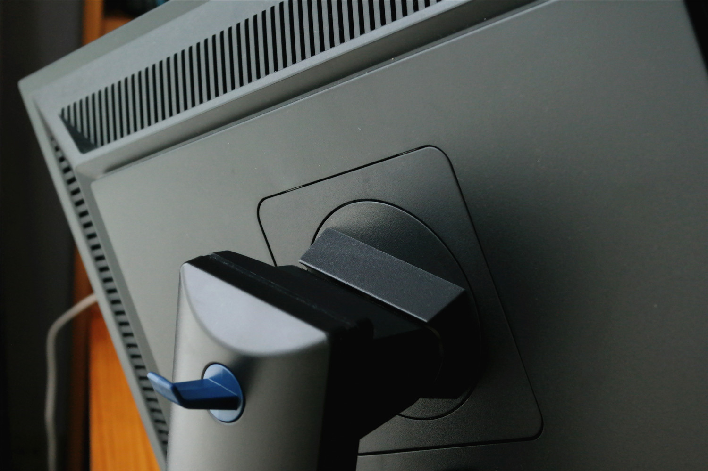
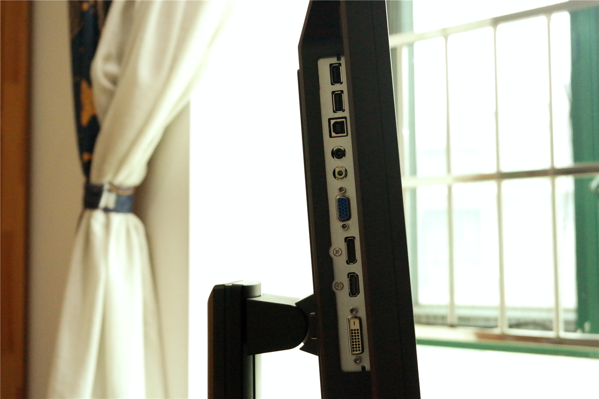
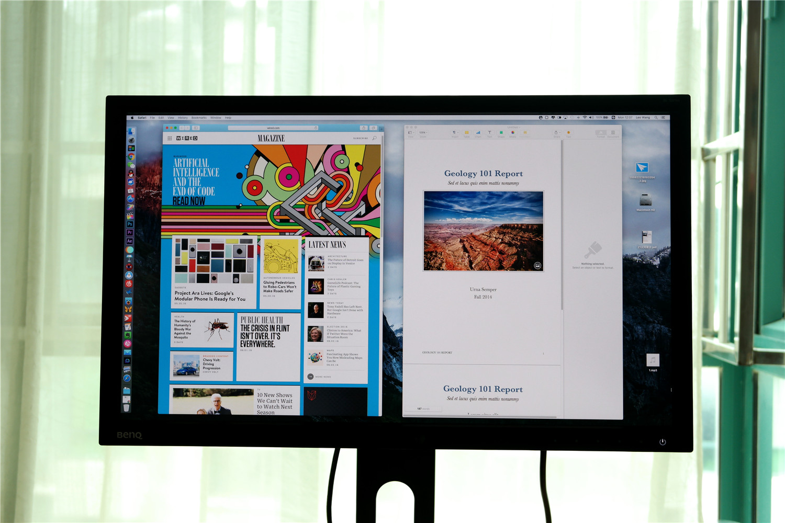
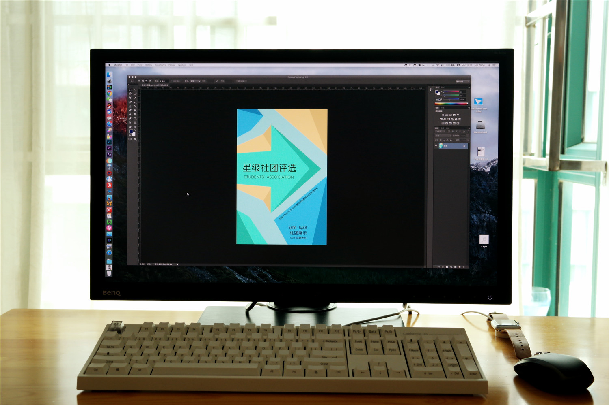
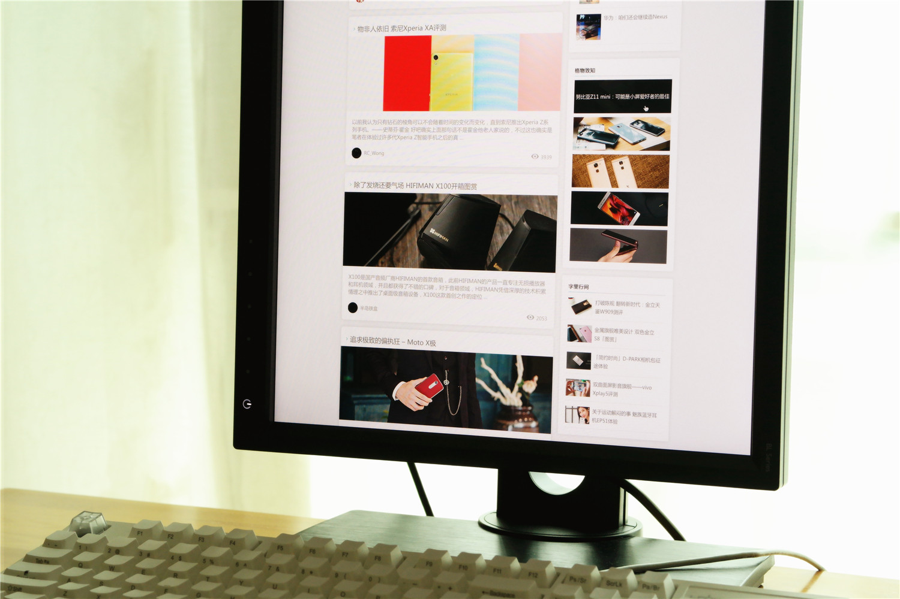
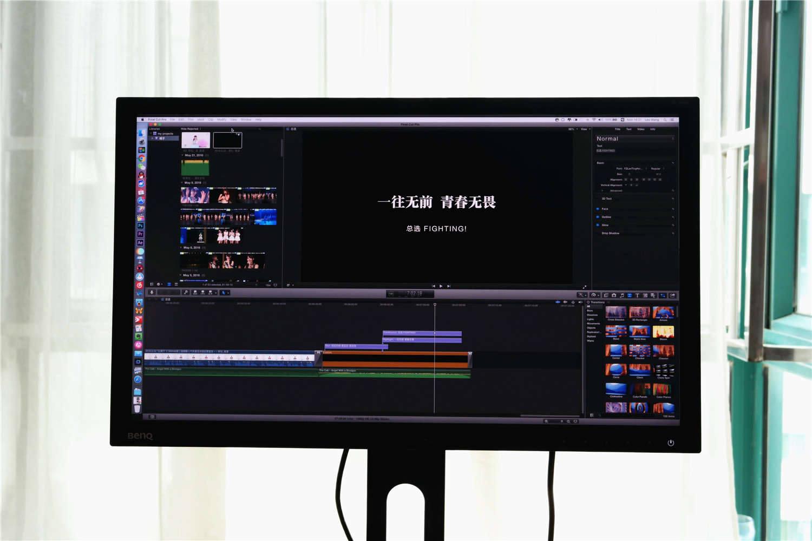

Benq BL2420PT Review

The original review is in CHINESE. This is a translated version by GOOGLE TRANSLATE.
As a digital enthusiasts and photographers, my personal requirements on the screen is very high, my main computer Macbook Pro Retina screen display delicate, rich colors, restore the real, but I am not satisfied, it is that it's Size - 15 inches. Although the 15-inch notebook computer is not a small size, but in my editing video, editing pictures, still will become stretched, very convenient. Therefore, I have been considering matching an external display, in order to obtain a more comfortable work space. Until I found BenQ BL2420PT, so do not hesitate to choose it.

BL2420PT as a whole with a black matte plastic material, details of the work is very good at this price display is very good. But the border slightly wider, people used to look at the narrow border screen may be difficult to accept.

BL2420PT the back of the three directions are designed to heat the mouth, no doubt heat dissipation capacity. In addition, the back of the display built-in speaker, connected to HDMI / DP cable, or DVI + audio cable, you can play music through the built-in speaker. Actual experience, as a monitor comes with speakers, its performance is fairly good, high-frequency performance is better, some low-frequency stuffy. For audio enthusiasts, the natural need to buy a pair of audio. But for "listen to a ring" for the average user, you can save the cost of additional purchase of audio.

BL2420PT support horizontal rotation, vertical rotation, rise and fall, forward backward, a total of eight directions of adjustment, you can adjust the height of the desktop itself. And when the damping is moderate, no matter what kind of angle, the base is always firmly stand on the desktop, do not worry about accidents.

Interface, BL2420PT is also very complete: DisplayPort, HDMI, DVI, VGA, can be said to cover almost all major display interface. VGA interface to take care of the old section of the machine, DP interface can provide the most high-definition display. In addition, BL2420PT also provides a USB Hub interface, with two USB 2.0 interface, but the location set at the bottom, inconvenient frequent plug, suitable for plug-in mouse and keyboard and other infrequent replacement equipment. In the vicinity of the power interface is set to power hard switch, the design of the location is reasonable, even if the screen does not flip over the touch of the button can also be very convenient to turn off the power will not be particularly troublesome.

Overall, BenQ BL2420PT is a fully balanced display. 23.8-inch, 2K resolution, freely adjustable bracket, rich interface configuration, 100% RGB color gamut, filter blue and other image display mode, this configuration and the price of 1799 for the prospective professional users has a very high Cost, ordinary users bought to do the expansion of the notebook display is also very affordable option.

Overall Evaluation
Design
Screen
Operating System
Camera
Battery
Summary
Comments